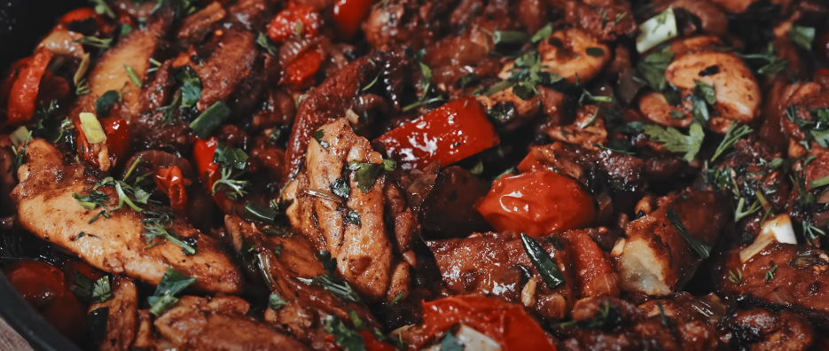
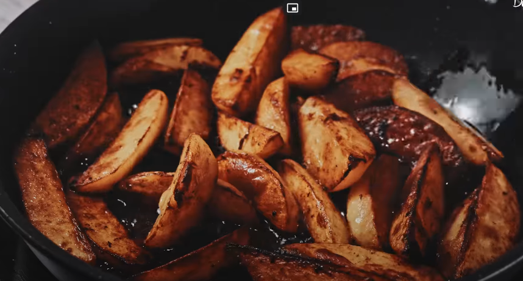

One Pan Chicken

Image from Dozus Cook
Description
This recipe with chicken thighs and potatoes is very aromatic, smooth and extremely delicious. It is liked by both children and adults.
A meal with meat and potatoes for the whole family.
The dish is very easy, so anyone can make it!
If you want a delicious lunch, prepare chicken thighs according to this recipe.
Simple, easy and delicious!
Ingredients
For the chicken
- 600 g Boneless chicken thighs
- 3/4 tsp Salt
- 1/2 tsp Black pepper
- 1 tsp Paprika
- 1 tbsp Vegetable oil
For the vegetables
- 600 g Potatoes
- 2 pcs. Onion
- 1 pc. Bell pepper
- 1 pc. Chili pepper
- 4 pcs. Garlic
- 20 g Green onion
- 20 g Parsley
- 20 g Dill
- 200 g Cherry tomatoes
- 1 tsp Salt
- 1/3 tsp Black pepper
- 1 tsp Paprika
- 1 tsp Coriander
Steps
- Cut your chicken thighs into 2 cm wide strips. Add them to a bowl and mix them with the seasonings.
- Cut your potatoes into wedges.
- In a frying pan, pour 3-4 tablespoons of vegetable oil. Add your chicken and cook it at high heat for 5 minutes on each side.
- Take the chicken out and put them aside.
- We now put the potatoes into the pan, allowing the wedges to absorb the flavour from the chicken juice(now at medium heat).
- Meanwhile, cut the onions, bell pepper, chili pepper.
- When the potatoes gain a nice brown color(like in the picture below), take them out and replace them with the onions we just cut(4 minutes).

- Now add the peppers and cook for 4 more minutes.
- Add the chicken and potatoes at low heat while we cut the greens.
- Finely cut the dill, parsley and green onions. Save a bit of the greens to use at the end, and add the rest of them to the pan.
- Cut the cherry tomatoes into halves. Crush the garlic cloves and add them both to the pan.
- Add your seasonings and mix.
- Cover the pan and let it simmer for 10 minutes at low heat.
- Add the greens we saved and plate accordingly.
Voila! Congratulations on making this incredibly delicious meal. For more recipes, click below to return to the home page: